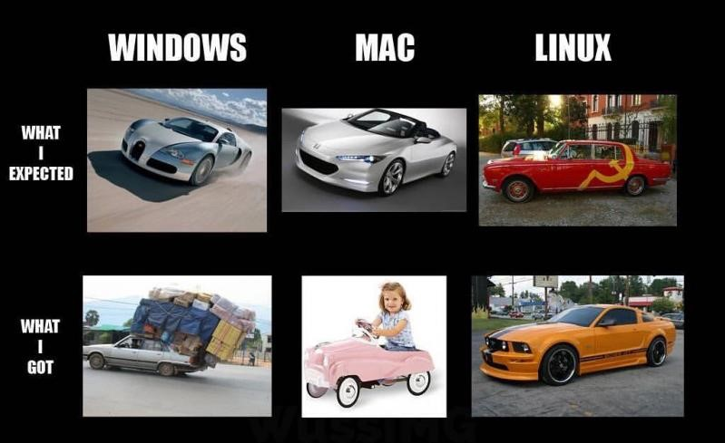
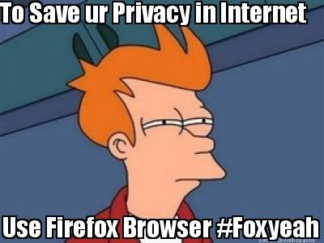
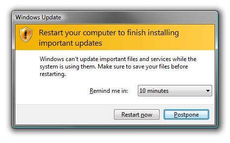
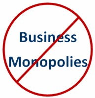
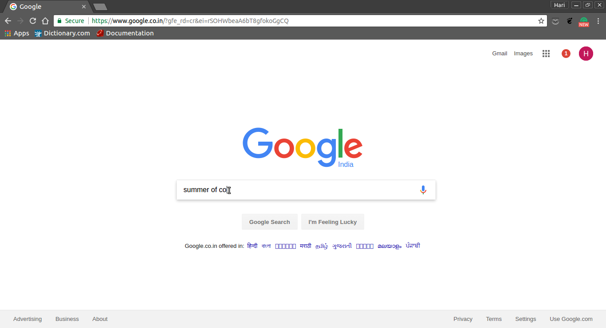
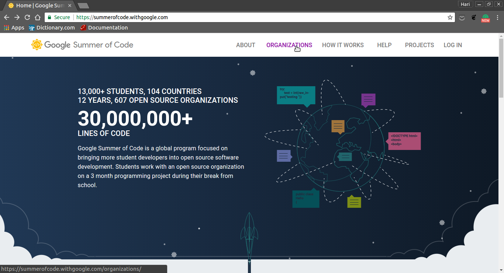
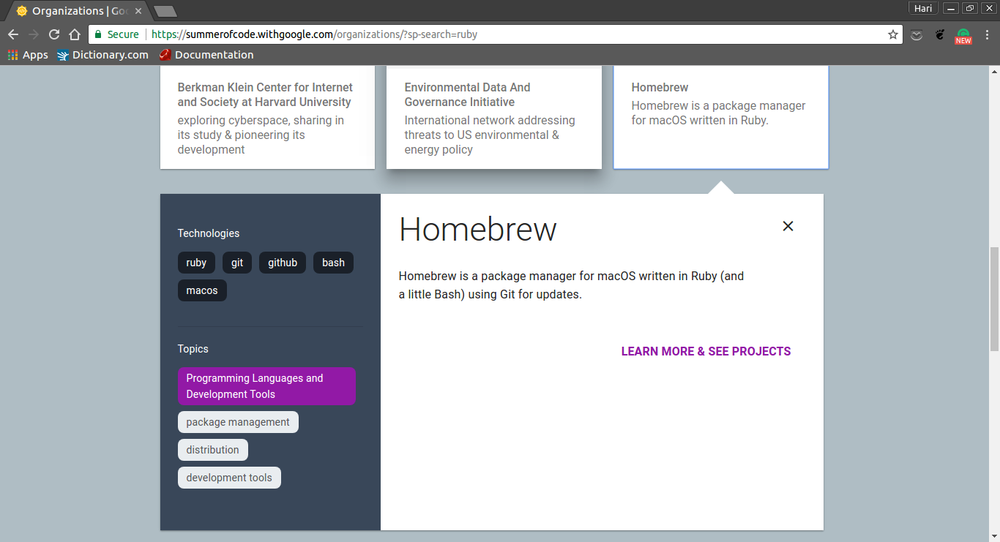
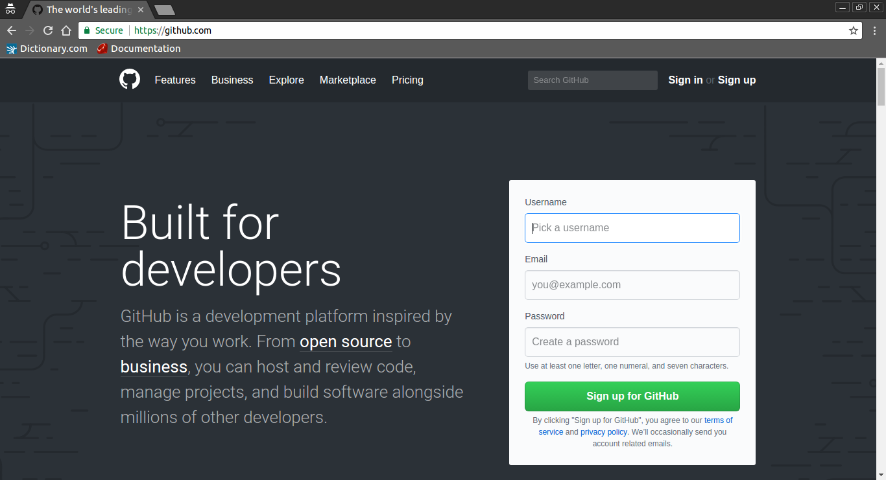
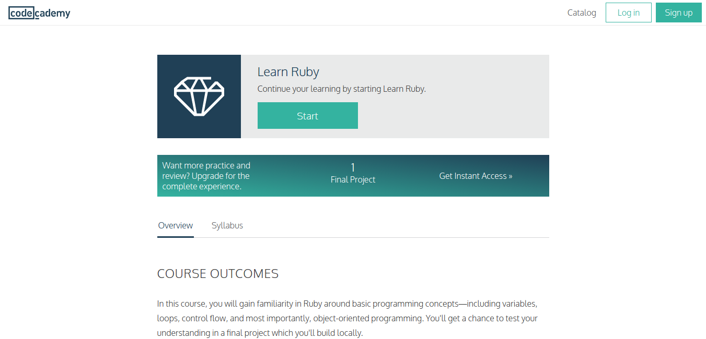
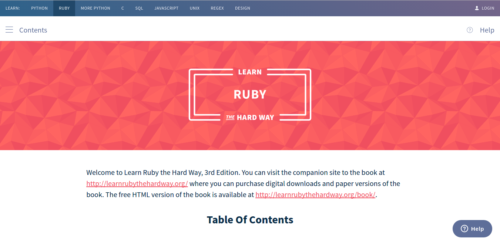

Insights to FOSS
the true objective behind FOSS
A presentation by
How does open source make a student's life better ?
1. Helpful Community

Open Source community is very helpful, so, students new to programming can take help from a lot of other people to get work done.
2. It’s generally free.
How does being free make a big deal ?
- Usually offered for free & don’t require you to pay for any additional copy you download unlike windows and mac operating systems.
- Can lengthen the life of old hardware and avoid the need to replace them.
- It has been estimated that open source software collectively saves businesses $60 billion a year.
3. Created by skillful and talented people.
- Developers prefer to work on open source products as they can be an outlet for their ideas and creativity.
- They won’t be confined by the rigid rules of the corporate world, and they’ll have the freedom to experiment and come up with high-quality programs.
- Students and other consumers get access to world-class and state-of-the-art software without having to pay too much or pay at all.
4. Highly reliable
- Developers prefer to work on open source products as they can be an outlet for their ideas and creativity.
- They won’t be confined by the rigid rules of the corporate world, and they’ll have the freedom to experiment and come up with high-quality programs.
- Students and other consumers get access to world-class and state-of-the-art software without having to pay too much or pay at all.
5. Provides full freedom
6. No imposed upgrades
7. No spying on users
8. Auditability
9. No monopolies
Competitive Programming
What is GSOC?
How I started with GSoC
- 
-
The GSoC website
This is what the summer of code website looks like..

Finding the right Open Source Organization
-
GSoC is about interacting with a community of like-minded people and contributing along with them to a common cause.
I started looking for Organisations related to Operating Systems.
-

-
Version Control Systems
A version control system is a repository of files, often the files for the source code of computer programs, with monitored access. Every change made to the source is tracked, along with who made the change, why they made it, and references to problems fixed, or enhancements introduced, by the change.
Git is one of the leading distributed Version Control Systems.
-
Git Hosting Sevices
Github and bitbucket are some of the most popular git hosting platforms.As the organisation I chose uses github I signed up for it.

Developing necessary skills
The Organisation I was build upon Ruby.Hence I started learning it.
First I tried the interactive course
And I referred more resources...
Contributers need a platform to Communicate.This problem is mostly overcome by the use of an IRC(Internet Relay Chat).The Organisation I chose used gitter to communicate.